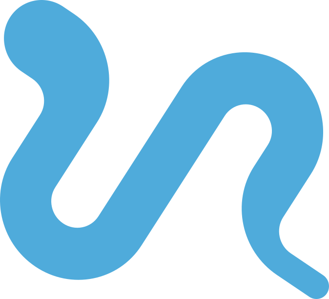

Conférence, cours d’initiation à la médecine, rencontre avec d’anciens élèves : une intervention gratuite et purement informative pour aider vos élèves de Première et de Terminale à comprendre la réforme et à anticiper leur première année.
Diploma Santé est un établissement privé parisien spécialisé dans la préparation aux études de santé. Cofondé par un major de concours, il accompagne des lycéens dès la Première, puis des étudiants en PASS, en L.AS et en LSPS.
Les cours y sont assurés par des professeurs agrégés, des universitaires et des docteurs. Leur pratique quotidienne des programmes et des modalités d’admission des facultés d’Île-de-France nous permet d’apporter aux lycées une information précise, concrète et à jour.
Depuis la réforme de 2020, beaucoup de familles peinent à se représenter ce qui attend leur enfant après le bac. Nos interventions n’ont qu’un objectif : donner aux élèves des repères clairs pour choisir en connaissance de cause, que ce choix les mène ou non vers la santé.
| Jusqu’en 2020 | Depuis la rentrée 2020 | |
|---|---|---|
| Le parcours | La PACES, voie d’accès unique | Deux voies : le PASS (majeure santé + mineure disciplinaire) et la L.AS (licence disciplinaire + mineure santé) |
| Les places | Un numerus clausus fixé nationalement | Le numerus apertus : chaque université fixe ses capacités d’accueil, en lien avec l’ARS |
| Les chances | Redoublement possible de la PACES | Pas de redoublement en PASS ; deux candidatures au maximum dans les filières de santé |
| Les filières | Accessibles par le concours de fin de PACES | Les filières MMOPK (médecine, maïeutique, odontologie, pharmacie, kinésithérapie), accessibles par PASS ou L.AS |
| L’admission | Un classement au concours | Des résultats universitaires, complétés selon les cas par des épreuves orales |
Chaque intervention se construit avec votre équipe : public, durée, moment de l’année et thèmes à privilégier. Tout se déroule dans vos locaux, sur le créneau qui vous convient.
PASS, L.AS, filières MMOPK, fin de la PACES et du numerus clausus, déroulé de l’admission : tout est expliqué simplement, puis place aux questions des élèves et, si vous le souhaitez, des parents.
Un vrai cours au format de première année, pour que les élèves mesurent le rythme et l’exigence de l’université. Il peut être assuré, si vous le souhaitez, par un professeur de médecine.
Une présence à vos forums des métiers ou de l’orientation pour répondre une à une aux questions des élèves et des parents, avec des repères écrits sur la réforme et les différentes voies d’accès.
D’anciens élèves, aujourd’hui en études de santé, racontent leur première année : leurs doutes, leur organisation, ce qui a marché. Une parole de pair, sincère, qui répond aux questions qu’on n’ose pas toujours poser.
Aucune présentation commerciale, aucun tarif, aucune documentation sur nos formations : le contenu porte sur les études de santé, pas sur notre établissement. Notre support peut vous être transmis à l’avance si vous souhaitez en prendre connaissance.
Aucun coût pour l’établissement, les élèves ou les familles.
Forum, heure de vie de classe, réunion de parents : nous nous adaptons.
Élèves de Première et de Terminale, parents, équipes éducatives.
Nous apportons nos supports ; un vidéoprojecteur suffit.
Un simple e-mail pour nous indiquer vos dates et les classes concernées.
Format, durée, thèmes à privilégier : tout est ajusté à votre projet.
Dans vos locaux, et nous restons disponibles pour les questions qui suivent.